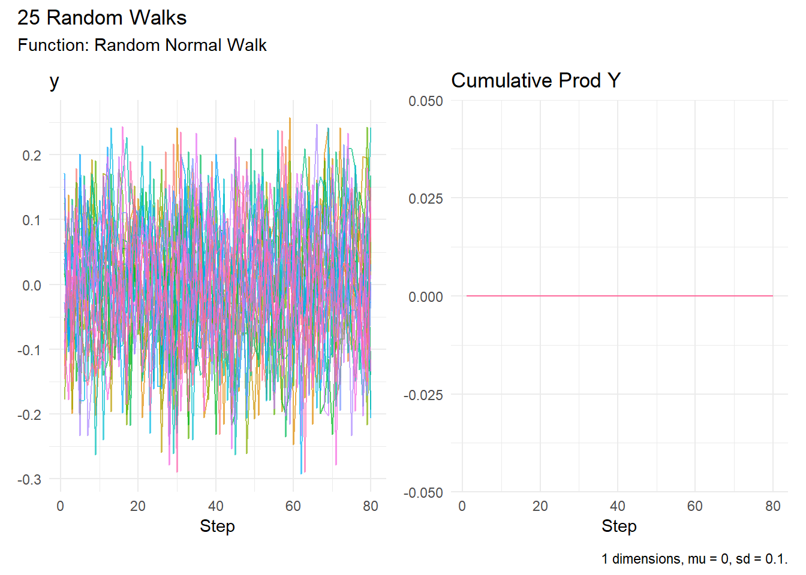
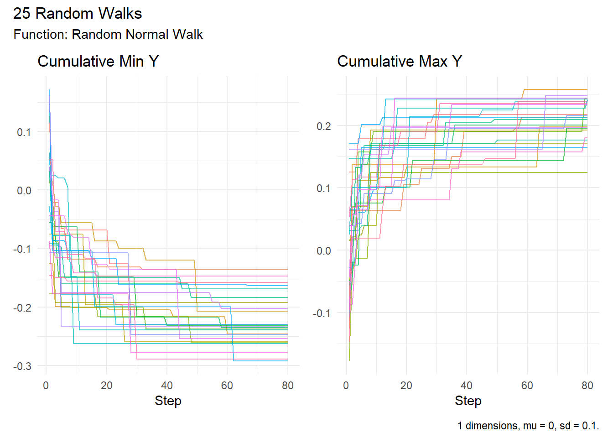

Revolutionary RandomWalker Update: 23 New Functions Transform Stochastic Modeling in R
Explore RandomWalker’s 21 new random walk functions in R, including Weibull, Wilcoxon, Poisson, and multi-dimensional simulations.
code
rtip
Author
Steven P. Sanderson II, MPH
Published
August 19, 2025
Keywords
Programming, RandomWalker R package, Random walk simulation R, New random walk functions, Distribution-based random walks, Multi-dimensional random walks R, Random walks with Weibull distribution, Wilcoxon signed-rank random walk, Poisson and negative binomial walks, Random walk visualization R, Custom displacement random walk, How to generate multi-dimensional random walks in R, Using statistical test distributions for random walks in R, Implementing random walks with logistic and beta distributions in R, Enhancing random walk analysis with subset_walks and visualize_walks functions, Practical applications of random walks with geometric and multinomial distributions in R
Key Update: RandomWalker version 0.3.0 introduces 21 new distribution-based random walk generators plus 2 enhanced utility functions, expanding from basic normal distributions to comprehensive stochastic modeling across discrete, continuous, and statistical test distributions.
The RandomWalker package has undergone a revolutionary transformation, evolving from a basic random walk generator to a comprehensive stochastic modeling toolkit. This update represents the most significant expansion in the package’s history, introducing 21 new random walk generator functions and 2 enhanced utility functions that will fundamentally change how R programmers approach random walk simulations.
Complete Function Arsenal: From Basic to Advanced
The new RandomWalker update delivers an unprecedented collection of functions covering every major category of statistical distributions.
Continuous Distribution Random Walks
The package now supports nine sophisticated continuous distribution functions, each optimized for specific modeling scenarios:
random_uniform_walk(): Perfect for Monte Carlo simulations requiring flat probability distributions
random_weibull_walk(): Essential for reliability engineering and survival analysis applications
random_t_walk(): Ideal for heavy-tailed financial processes and robust statistical modeling
random_logistic_walk(): Designed for growth modeling and S-curve phenomena
random_lognormal_walk(): Critical for asset pricing and multiplicative processes
random_gamma_walk(): Optimized for waiting times and shape-scale modeling scenarios
random_exponential_walk(): Built for Poisson process intervals and decay modeling
random_beta_walk(): Perfect for bounded probability processes and proportion modeling
random_cauchy_walk(): Specialized for extreme value theory and heavy-tailed phenomena
Enhanced Utility Functions: Powerful New Capabilities
Two critical utility functions received major enhancements that dramatically expand their functionality:
Advanced Subsetting with subset_walks()
The updated subset_walks() function introduces the .value parameter, allowing users to subset random walks based on any column, not just the default “y” position :
# Subset by custom criteriasubset_walks(walks, .type ="both") |>visualize_walks(.interactive =TRUE)
Multi-Column Visualization with visualize_walks()
The enhanced visualize_walks() function now accepts vector inputs for the .pluck parameter, enabling simultaneous visualization of multiple walk types or simulations :
set.seed(123)rw <-random_normal_walk()# Visualize specific simulationsvisualize_walks(rw, .pluck =c(1, 3))

# Compare multiple distribution typesvisualize_walks(rw, .pluck =c("cum_min","cum_max"))

Multi-Dimensional Modeling Revolution
All 21 generator functions support multi-dimensional random walks through the .dimensions parameter, breaking the traditional 1D limitation. This capability transforms spatial modeling applications:
# 2D random walks for spatial modelingwalk_2d <-random_normal_walk(.dimensions =2)head(walk_2d, 1) |>t()
• Tidyverse Integration: Full compatibility with dplyr, ggplot2, and pipe-friendly workflows
• Industry Applications: Purpose-built functions for finance, engineering, biology, and statistical testing
Migration and Best Practices
Existing RandomWalker users can seamlessly integrate the new functions while maintaining backward compatibility. The package maintains its tidyverse-friendly design philosophy, ensuring smooth integration with existing R workflows .
Documentation: Each function includes comprehensive documentation with parameter specifications, use cases, and practical examples.
Conclusion: The Future of Stochastic Modeling in R
The RandomWalker v0.3.0 update represents a paradigm shift in R-based stochastic modeling. With 23 new and enhanced functions covering the complete spectrum of statistical distributions, R programmers now have unprecedented power to model complex random processes across any domain.
Whether you’re simulating financial markets with heavy tailed distributions, modeling biological populations with discrete processes, or conducting advanced statistical testing with nonparametric approaches, RandomWalker delivers the tools needed for sophisticated analysis.
Ready to explore the new capabilities? Install the latest version and discover how these powerful new functions can transform your stochastic modeling projects. The future of random walk simulation in R has arrived.
Have you tried the new RandomWalker functions? Share your experiences and applications in the comments below, and don’t forget to spread the word about these exciting updates on social media!